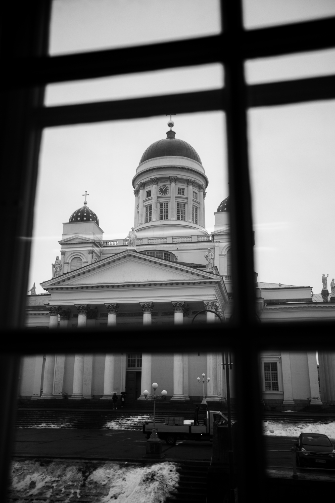
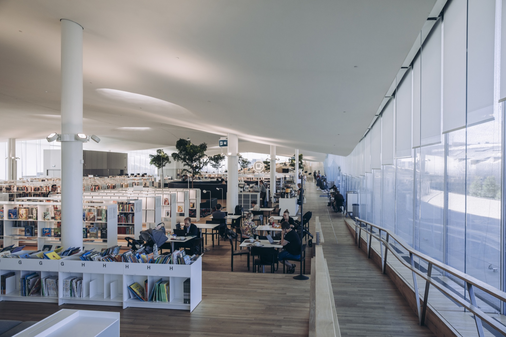
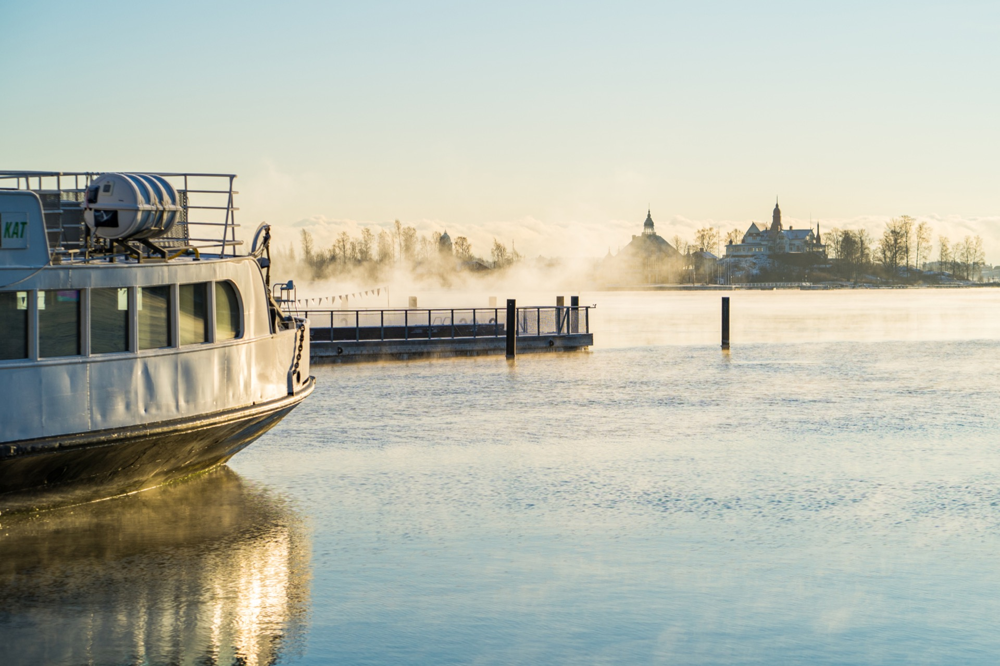
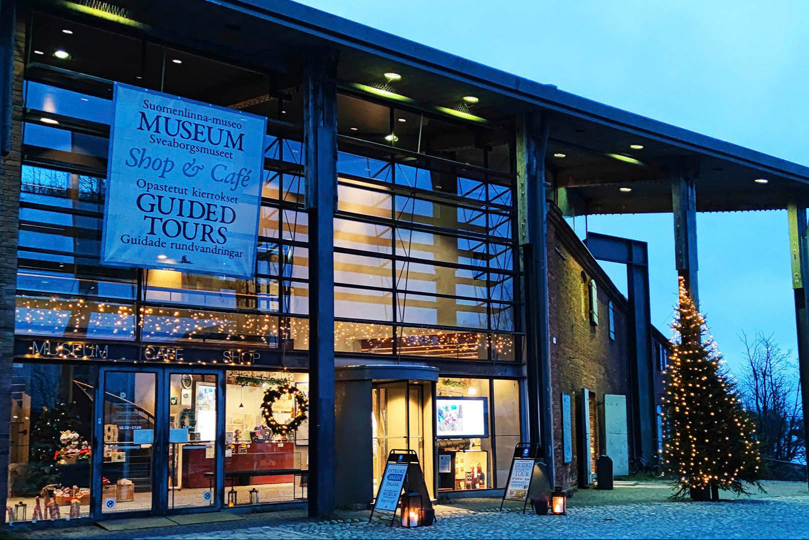
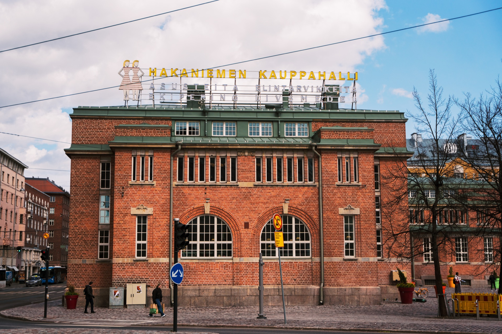
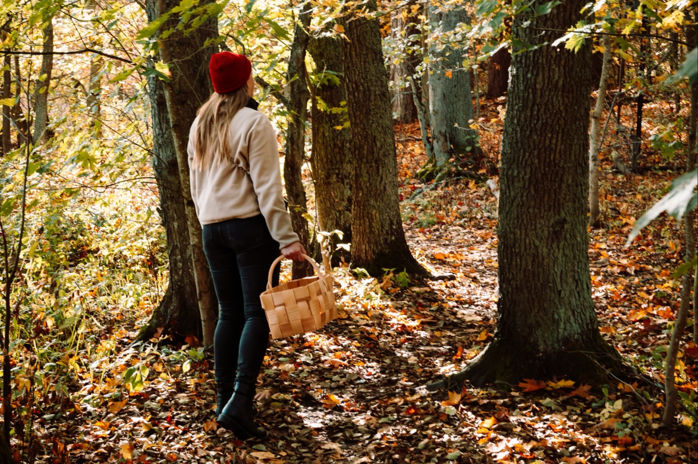
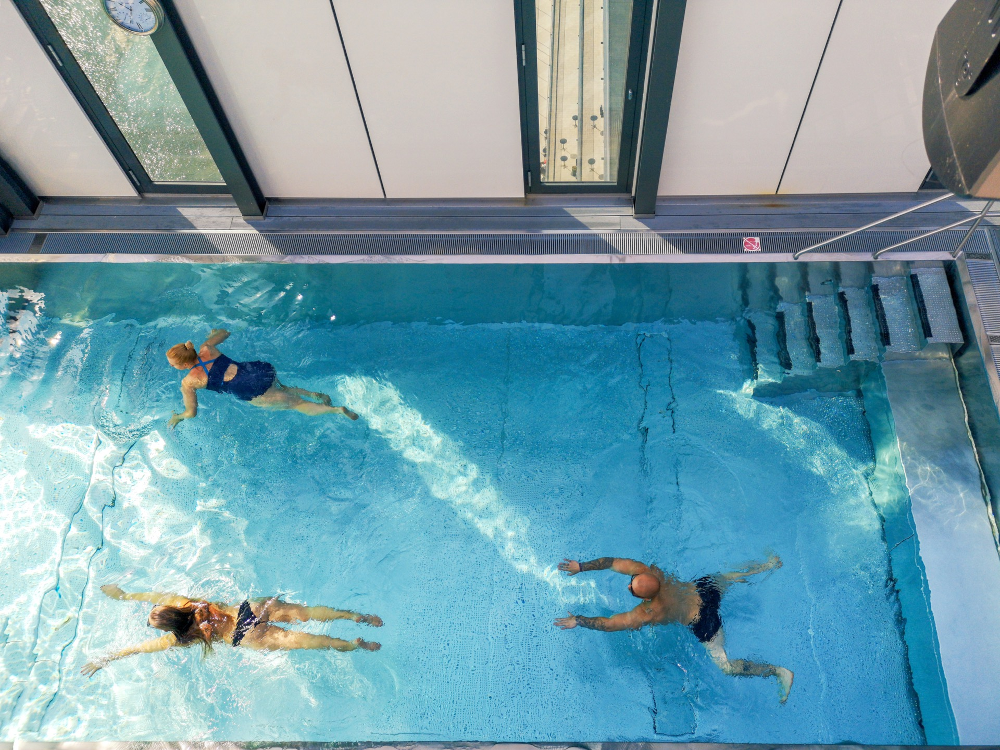
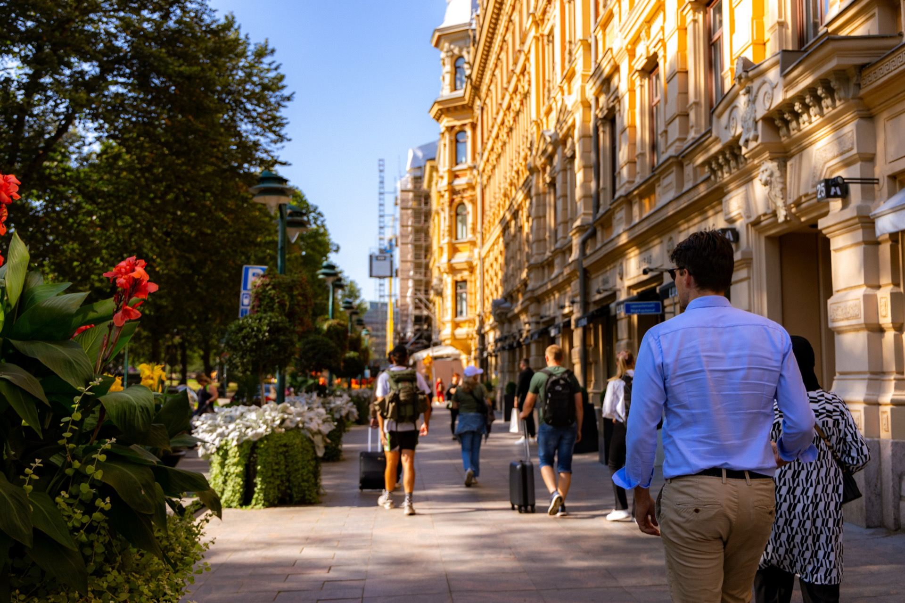
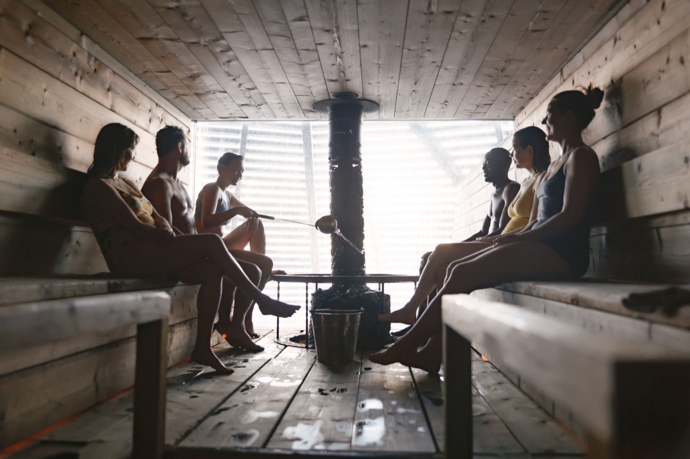
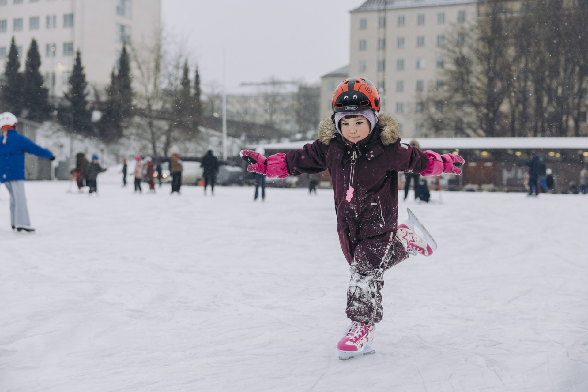

Helsinki
The Nordic Design Capital
The Nordic Design Capital

Where Nordic design meets maritime charm. A compact, walkable city on the Baltic Sea — sophisticated yet approachable, modern yet rooted in tradition.
Helsinki's Design District is a 25-block creative quarter housing over 200 design shops, studios, galleries, and museums — the densest concentration of design culture in the Nordic world.
Marimekko and Artek flagships offer an immersive encounter with Finland's most iconic design brands. Alvar Aalto's architecture defines the city's civic identity, from Finlandia Hall to the Academic Bookstore.
The Oodi Central Library — opened 2018, winner of the International Federation of Library Associations' Public Library of the Year — epitomises Helsinki's investment in bold public architecture. Temppeliaukio Church, carved directly into solid bedrock, remains one of the most extraordinary sacred spaces in Europe. Art Nouveau buildings in Katajanokka and Eira recall Helsinki's early 20th-century golden age.


Helsinki is the world's sauna capital. With more saunas than cars in Finland, the ritual is not a wellness trend — it is the original social technology: democratic, ancient, and deeply restorative.
The waterfront public saunas offer group experiences without compromise on quality. Löyly, designed by Avanto Architects, combines a wood-burning sauna with a restaurant and direct sea swimming steps from the hot room. Allas Sea Pool pairs a rooftop sauna with heated outdoor pools in the shadow of the Market Square ferry terminal. Uusi Sauna in Jätkäsaari brings the traditional neighbourhood bathhouse tradition into a contemporary setting.
In winter, ice swimming directly from the sauna is standard practice — a cold shock protocol that Finnish hosts are proud to share with international guests. Groups consistently rate the sauna evening among the most memorable experiences of any Finland itinerary.
City, sea, and culture — curated for international groups





Helsinki punches well above its weight at the table. The city holds several Michelin-starred restaurants — a remarkable density for a capital of 650,000 — alongside a vibrant mid-market dining scene rooted in seasonal, local produce.
The historic market halls are cornerstones of any culinary itinerary. Hakaniemi Market Hall, reopened after an acclaimed renovation, offers Finnish street food and artisan producers under one late-19th-century roof. The Old Market Hall by the harbour is one of Scandinavia's oldest covered markets, still trading in smoked fish, reindeer, and cloudberry preserves.
New Nordic cuisine has taken firm root in Helsinki — a cuisine defined by fermentation, forage, and cold-water seafood. The craft beer movement has produced world-class microbreweries, and the Helsinki cocktail scene rivals Stockholm and Copenhagen. Group dinners can be designed as progressive experiences across multiple venues within a single walkable neighbourhood.


Helsinki in winter is a different city — intimate, atmospheric, unhurried. The cold compresses social life into warm interiors: candlelit restaurants, steaming saunas, and the quiet drama of a frozen Baltic at dusk.
Christmas markets animate Senate Square from late November. The city's outdoor skating rinks — including Railway Square and Jätkäsaari — draw locals and visitors from December onwards.
Winter sauna culture reaches its peak intensity in January and February: the contrast between a 90°C birch-scented room and a hole cut in the ice of the sea creates a physiological experience that groups describe as transformative. Snow-covered Suomenlinna, accessible year-round by ferry, takes on a completely different character in winter — silent, vast, and oddly moving.
Helsinki-Vantaa Airport (HEL) is one of Northern Europe's best-connected hubs, with direct flights from all major European cities. Transfer time to the city centre is 30 minutes by rail, taxi, or bus — no transit stress for arriving groups.
Helsinki is a compact city. The Design District, Senate Square, Market Square, Esplanade, and the main sauna venues are all within a 20-minute walk of each other. Tram lines cover the rest. No coach transfers needed for core-city programmes.
Programs from 1 to 7 nights. Choose your highlights.
Prices are indicative and vary by season, group size, and accommodation choice.
Your Local Partner in Finland
Finland DMC Oy designs and delivers bespoke group travel experiences across Finland — from Helsinki's design quarter to the wilderness of Lapland. We are a destination management company with deep local knowledge, reliable supplier relationships, and a single point of contact for international tour operators.
Finland DMC Helsinki Capital 2026 v1.0